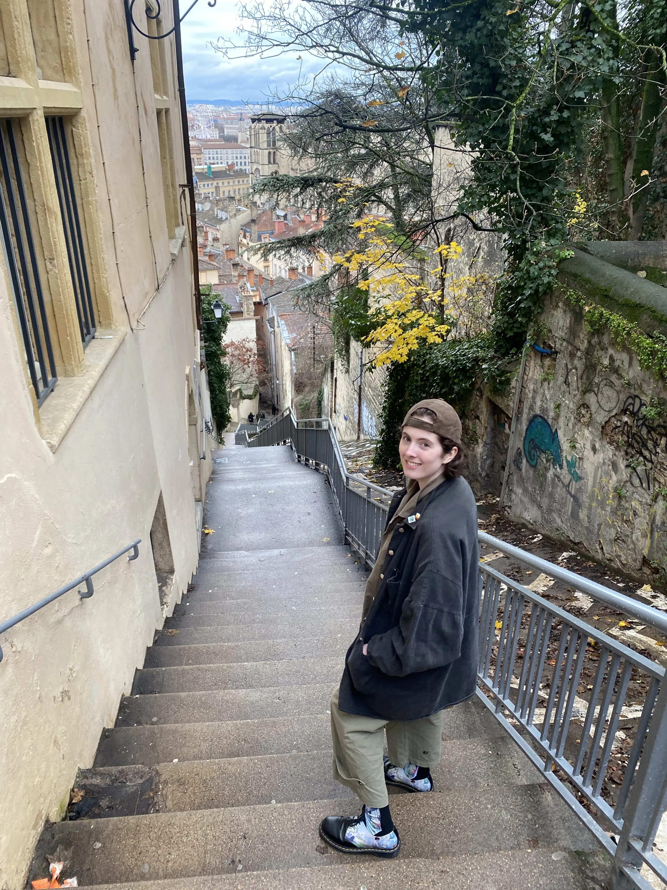

I am a computational linguistics, data science, and audio enthusiast investigating the intersections of technology, new media, ethics, and language.
I love a good story, a fun game, and a strongly-used verb.
In my free time, you can find me haunting local cafes and libraries,
writing screenplays, and talking to the void.
